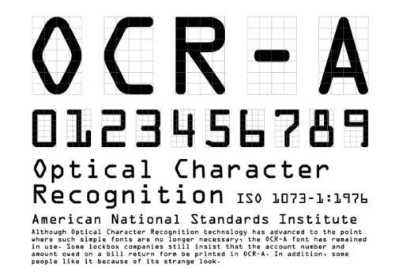
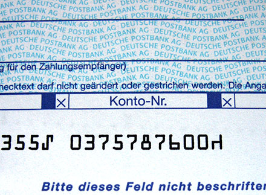

Home
SF MOMA
OCR A
Designed by American Type Founders in 1966
About OCR A
OCR stands for "optical character recognition," a technology that converts printed information into workable electronic data by scanning and identifying individual numbers and letters. This font was designed to be perfectly readable by computers; each character is shaped to reflect the precise format set by the United States Bureau of Standards. Originally, OCR-A was used mostly by banks, credit card companies, and other businesses that process large amounts of printed data by machine.
OCR A 60pt
The quick brown fox jumps over the lazy dog
OCR A 45pt
The quick brown fox jumps over the lazy dog
OCR A 24pt
The quick brown fox jumps over the lazy dog
OCR A 14pt
The quick brown fox jumps over the lazy dog
OCR A 9pt
The quick brown fox jumps over the lazy dog
 